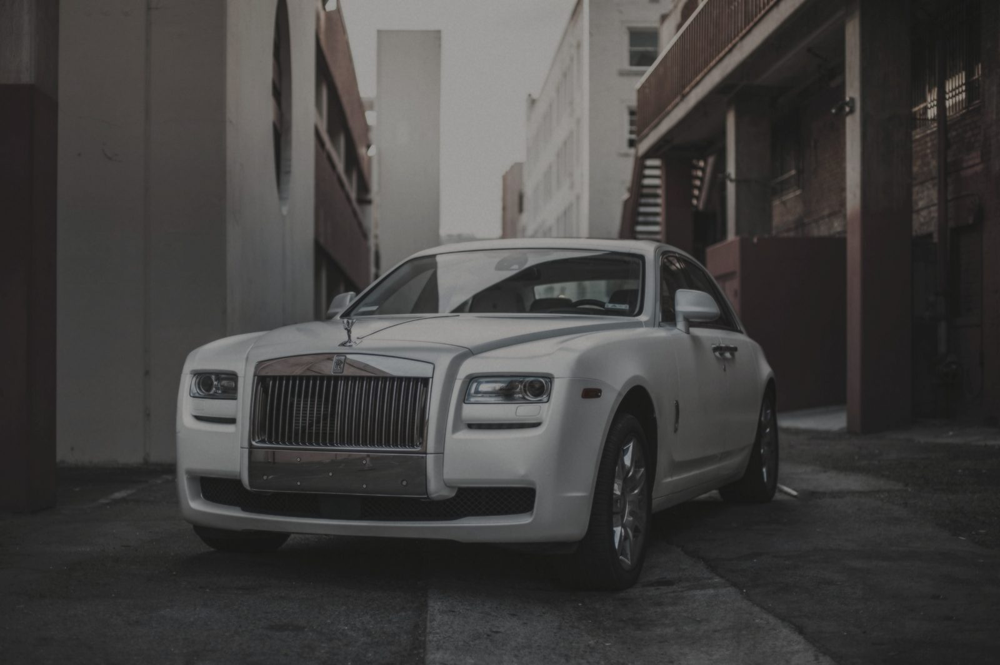
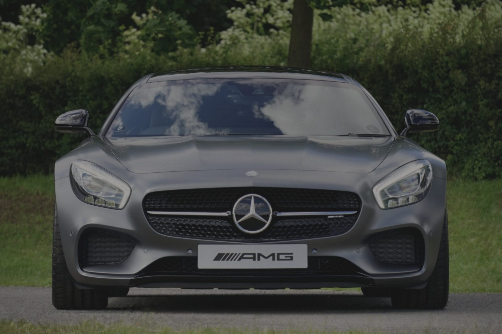

Results
The same car, twice.
These sliders are honest about what they are. Each pair uses one freely licensed photograph. The “before” frame is that same image, processed to look flatter and less considered — a suggestion of an unrestored finish, not a documentary record of a job.
01 · White Rolls-Royce
A courtyard portrait used as a finished frame. The left side of the slider is the same photograph with contrast, colour and reflections reduced, a warm haze added, and fine noise introduced. No claim is made about a real correction, a real client, or a measured result.


02 · Mercedes-AMG GT
A head-on still of a silver AMG, treated in the same way. The processing is identical in kind: less contrast, less saturation, softened highlights, a faint warm film. It is here to show how a comparison could be presented on a commissioned site, not to sell a result.

How the “before” frames were made
From the finished photograph, in this order: contrast reduced to about 70% and colour to about 72%; a warm-grey fill multiplied over the image; a light blur blended in so reflections lose their edge; a little monochrome noise; a final, slight flattening of contrast. The crop and framing are unchanged. A live studio would publish paired photographs of the same vehicle, taken before and after the work, and would say so.